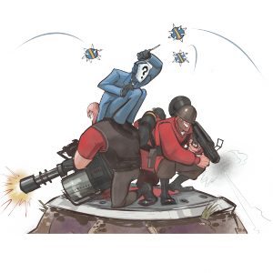

Os principais modos de jogo são: Modo Arena Mapas Arena são projetados para manter a diversidade de classes do Team Fortress 2 ao mesmo tempo que foca o objetivo no combate entre duas equipes. Enquanto outros modos de jogo pedem uma estratégia geral da equipe, Arena foca em escolhas táticas específicas que as equipes fazem em uma única batalha. O modo Arena é composto por mapas menores e que duram menos tempo. A rodada termina quando uma equipe não tem mais jogadores vivos na arena ou quando o ponto de captura central for capturado, após sua captura ser permitida. O ponto de captura central tem sua captura permitida após um minuto ter se passado na rodada atual. Rodadas comumente são rápidas e bem competitivas, com ênfase no rol de classes da sua equipe e seu plano para dominar as escolhas de classe da equipe inimiga. O modo Arena comporta tanto partidas pequenas com três jogadores de cada lado quanto grandes batalhas doze contra doze. Arena funciona de forma similar à Morte Súbita - não há como renascer e armários de reabastecimento não estão disponíveis. Normalmente há poucos kits médicos disponíveis, comumente postos longe dos locais onde há maior ação e/ou perto de locais de alto risco. Isso força as equipes a depender mais de Dispensers e Medics. Mapas - Badlands, Granary, Lumberyard, Nucleus, Offblast, Ravine, Sawmill, Watchtower, Well. Capture a Bandeira O modo Capture a Bandeira é composto por uma base RED e outra BLU, cada uma contendo sua própria maleta de Inteligência (também conhecida como a bandeira). O objetivo das equipes é capturar a Inteligência inimiga até alcançar o limite de capturas do jogo (limite padrão de 3 capturas) enquanto impede que os inimigos façam o mesmo. A inteligência de cada equipe normalmente fica localizada nos fundos de seu território e em um local simétrico uma à outra, em uma área conhecida como a "sala da Inteligência". Para pegar a Inteligência o jogador deve tocar a maleta inimiga. Enquanto está com a Inteligência inimiga, o jogador deve levá-la ao local de sua Inteligência, onde deve entrar na 'zona de captura' (indicada pelas linhas amarelas e pretas) para capturá-la com sucesso. Após cada captura bem sucedida sua equipe será recompensada com dez segundos de 100% de chances de críticos. Mapas - 2Fort,Turbine, Well, Doublecross, Sawmill. 
Pontos de Controle Mapas de Pontos de Controle possuem dois modos de jogo principais. Pontos de controle são plataformas circulares com uma luz e o holograma da equipe no centro (pontos neutros terão uma luz e hologramas brancos). Para capturar um ponto da equipe inimiga, o jogador deve simplesmente ficar em cima do ponto até que a barra de captura ser preenchida com a cor da sua equipe. Mapas de Controle Padrão - 5Gorge, Badlands, Coldfront, Fastlane, Freight, Granary, Well, Yukon, Coldfront, Process. Mapas de Ataque/Defesa - Dustbowl, Egypt, Gorge, Gravel Pit, Junction, Steel. Mapas de Ataque/Defesa Medieval - Degroot Keep.  Rei do Pedaço Rei do Pedaço é similar ao modo Arena. Rei do Pedaço foca em um único ponto de controle no centro do mapa, que é neutro e não pode ser capturado logo no início da rodada. As equipes devem se encaminhar ao ponto de controle e capturá-lo quando este estiver disponível. Assim que o ponto for capturado por uma equipe, seu cronômetro começará uma contagem regressiva de três minutos. Se a equipe inimiga conseguir capturar o ponto, o cronômetro deles começará a contar enquanto o cronômetro da outra equipe congelará no tempo que estava quando o ponto foi recapturado. Uma equipe vence quando o ponto estiver sob seu controle e os três minutos tiverem acabado. Mapas de Rei do Pedaço - Harvest Event, Nucleus, Sawmill, Viaduct, Lakeside, Badlands.  Carga Explosiva Em mapas de Carga Explosiva, a equipe BLU deve escoltar um carrinho cheio de explosivos por uma série de checkpoints até a base RED dentro de um certo espaço de tempo. Membros da equipe BLU movem ou "empurram" o carrinho ficando perto dele - quanto mais pessoas estiverem perto do carrinho, mais rápido ele se moverá. Qualquer membro da equipe RED que estiver perto do carrinho o impedirá de avançar. Se nenhum jogador BLU empurrar o carrinho em 30 segundos, o carrinho começará a voltar lentamente até que chegue até um checkpoint, à base BLU, em uma subida no caminho (em alguns mapas) ou até um jogador BLU ficar perto novamente. O carrinho funciona como um Fornecedor nível um para a equipe BLU (e Spies inimigos disfarçados) para reabastecer vida e munição àqueles que estiverem empurrando-o. Não há reabastecimento de munição para jogadores que estiverem na parte frontal do carrinho. Mapas de Carga Explosiva - Badwater Basin, Gold Rush, Thunder Mountain, Barnblitz, Snowycoast, Frontier, Hoodoo, Upward, Borneo, Swiftwater, Enclosure. |